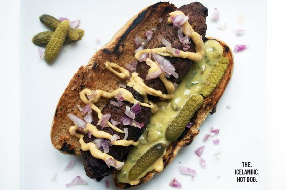

Pyslur: Icelandic Hot Dog

Description
The Iceland Monitor writes that "locals, expatriates and holiday-makers alike must all be familiar with Iceland’s national dish - hot-dogs with all the trimmings (‘pylsa með öllu’ in Icelandic).
The hot-dog sausage is served in bread and liberally accompanied with fried onion, raw onion, mustard, ketchup and remoulade
Ingredients
- 3 tbsp mayonnaise
- 100 g sour single cream
- 2 tbsp capers, finely chopped
- 4 pork sausages
- 4 bread roll (e.g. hot dog rolls or sandwich rolls)
- 80 g gherkin, sliced lengthwise
- red onion, fried onions
- 3/4 cup Olive oil
Steps
- Mix the mayonnaise, sour single cream and capers in a bowl.
- Heat the oil in a frying pan. Fry the sausages for approx. 8 mins. all over.
- Cut open the bread rolls lengthwise, cover with the remoulade, place one sausage inside each roll.
- Add the gherkins and onion, scatter the fried onions on top.
Main page